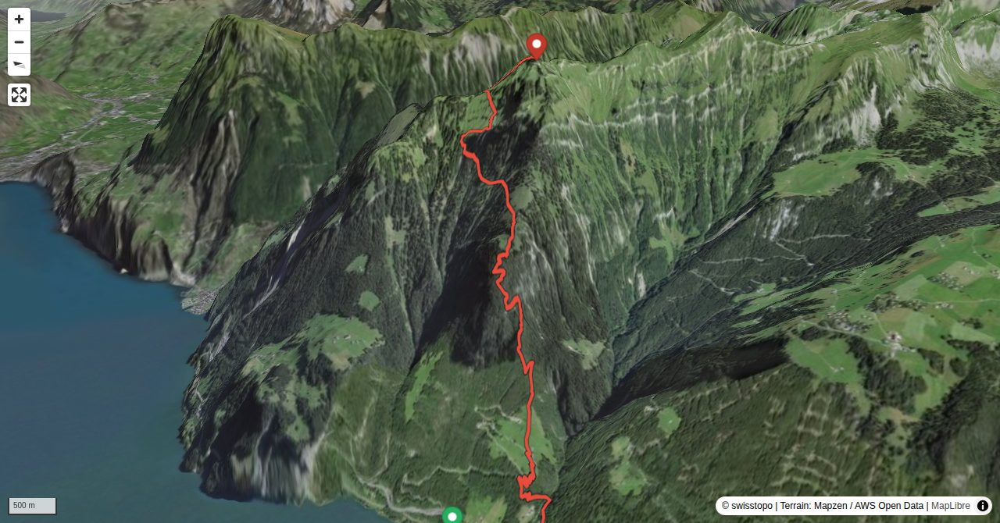

Seit der alpine Wanderweg am Franzenstock eingerichtet wurde, verfügt der Hausberg von Flüelen über einen eleganten Aufstieg fast ohne Umschweife. Eine ideale Trainingslinie, aber auch eine kurzweilige Wandertour. So sehr sich die Route im Aufstieg lohnt: Für den Abstieg dürfte sie den meisten zu steil und knieschindend sein.
Endstation der Urner Buslinie 1, meist viertelstündliche Verbindung von und zum Bahnhof Flüelen. Zu Fuss rund 25 Minuten von Bahnhof entfernt. Unmittelbar bei der Bushaltestelle befindet sich die Talstation der Luftseilbahn nach Ober Axen, rund 15 Minuten entfernt jene nach Giebel.
Quick Facts
| Summit elevation | 2071 m |
|---|---|
| Difficulty | SAC T3+ Check the route notes below for terrain and commitment level. Guide |
| Trailhead | Flüelen Gruonbach |
| Distance | 5.1 km (out-and-back) |
| Total ascent | ~1609 m |
| Elevation range | 461-2070 m |
| Route sources | SAC Route Portal |
Photos


All photos: SAC Route Portal
Interactive Route Map
Map tiles: © swisstopo (CC BY 3.0) | © OpenStreetMap contributors | Map library: Leaflet. Route line is approximate — verify against the SAC Route Portal before going.
3D Terrain View

Tiles: © swisstopo (SWISSIMAGE) + AWS Terrain Tiles. Powered by MapLibre GL JS. Open fullscreen ↗
Route Details
Von Flüelen über Franzen
- Bei Benützung der Luftseilbahn Giebel rund 40 Minuten kürzer.
Terrain & safety
Zwischen Giebel und Franzen bewegt man sich in steilem Gelände, allerdings dämpft der dichte Wald das Gefühl der Exposition. Einige Felsstufen sind mit Fixseilen gesichert. Der Abschnitt von Franzen bis zum Sattel auf 1870 m führt durch steile Wildheuplanggen: Der Weg ist dort stets gut begehbar, bei Nässe allerdings sehr heikel.
Source: SAC Route Portal
Getting There & Back
Start: Flüelen Gruonbach (461 m)
Directions from to Flüelen Gruonbach
Route returns to Flüelen Gruonbach.
Weather Planning
7-day summit forecast (live)
Loading forecast…
Elevation Profile
Computed from the inlined GPX track (elevations from SwissTopo height API).
Field Reference
| Trailhead | Flüelen Gruonbach | 46.91540, 8.62510 |
|---|---|---|
| Summit | Rophaien (2071 m) | 46.92798, 8.64648 |
Coordinates are WGS84 decimal degrees (lat, lon). Emergency: 112 (general) or 1414 (Rega air rescue). Page URL: